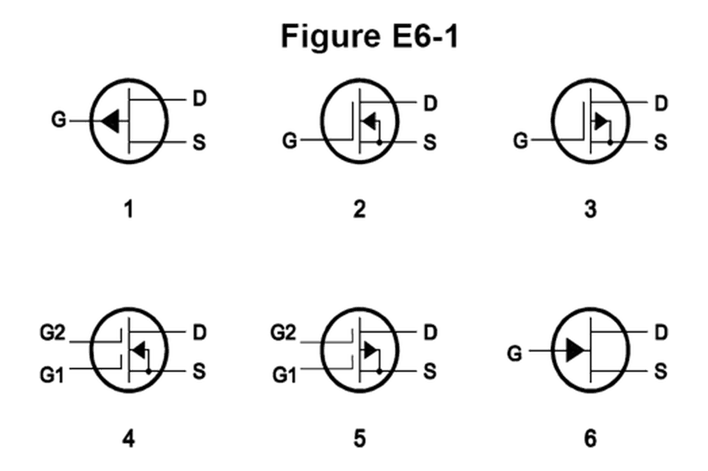
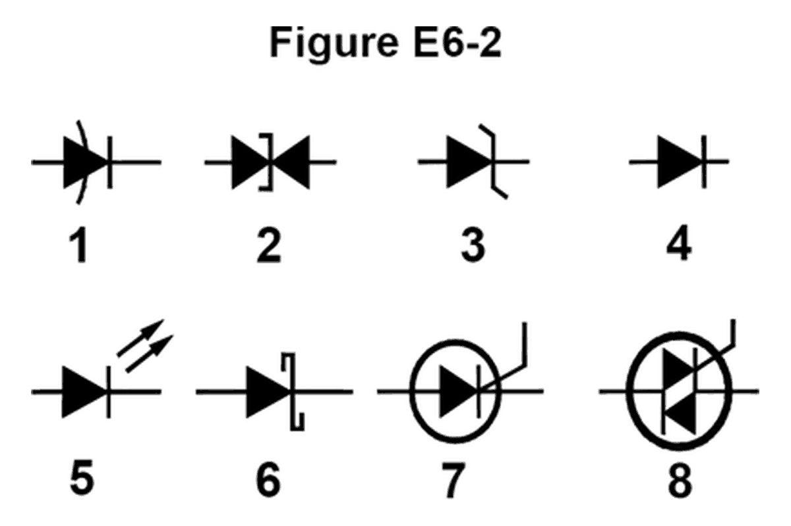
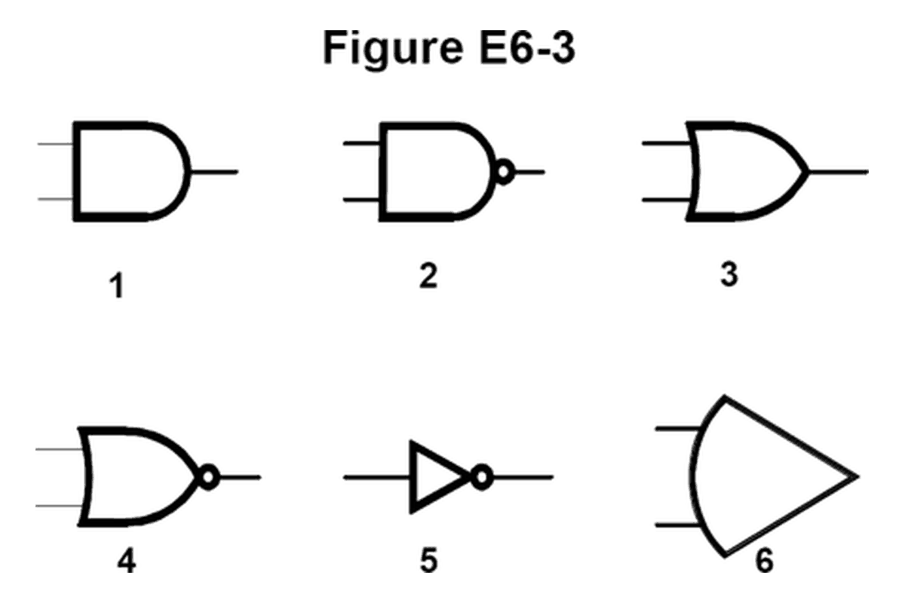
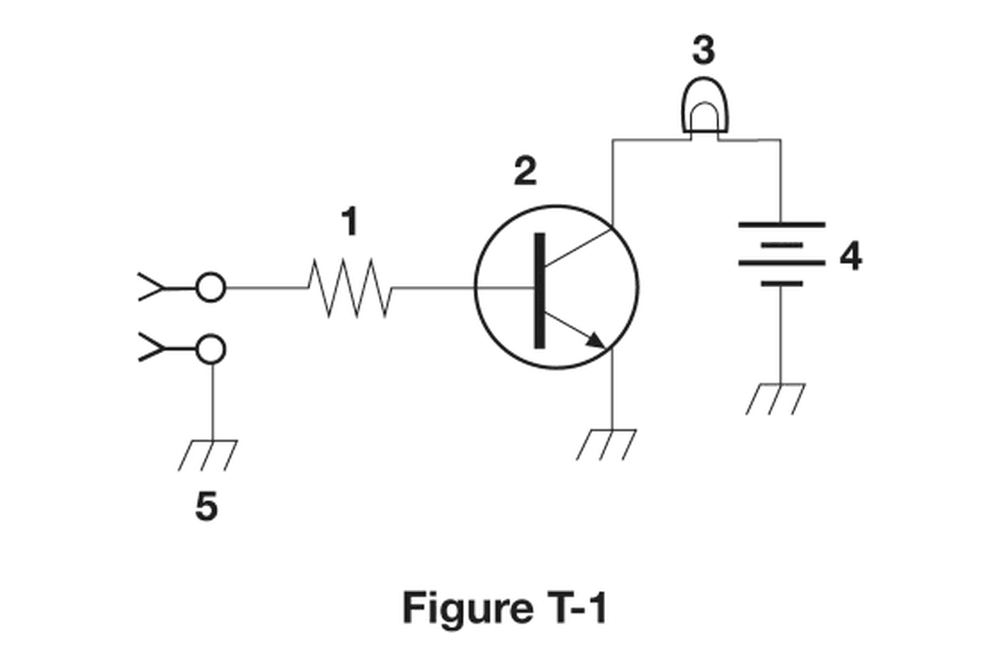
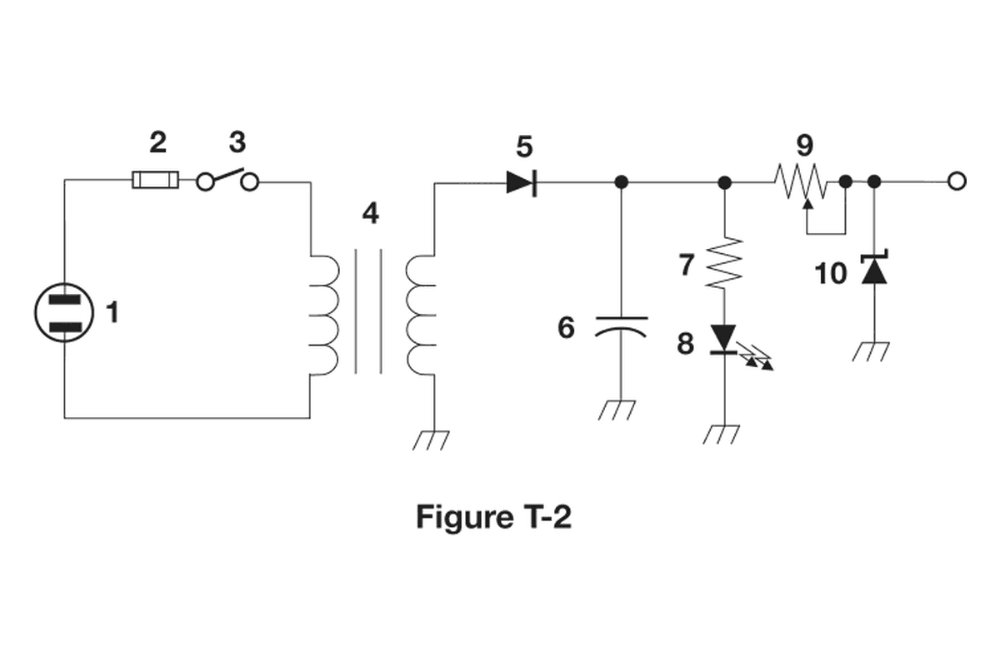
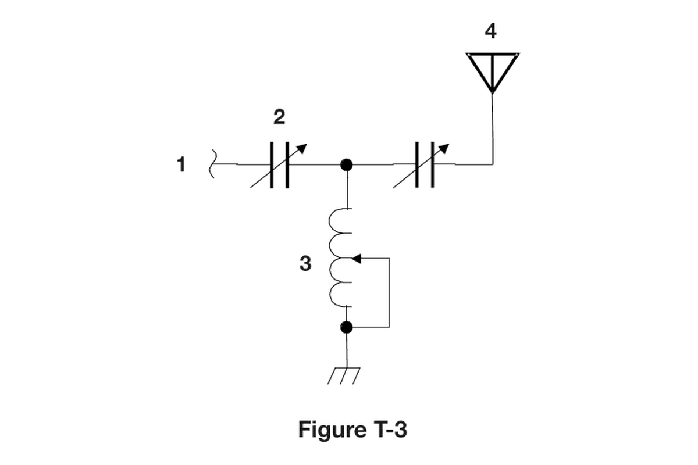
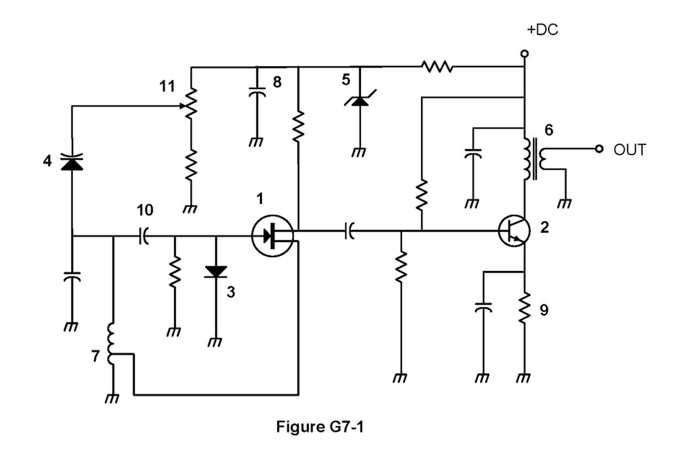
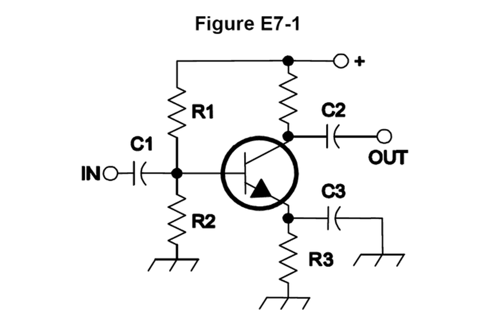
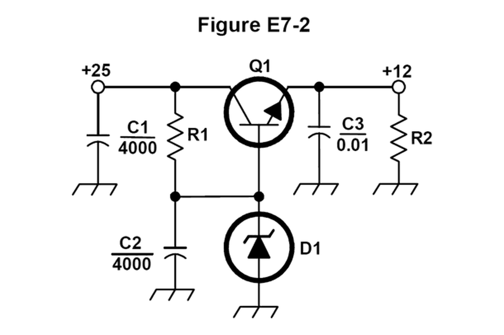
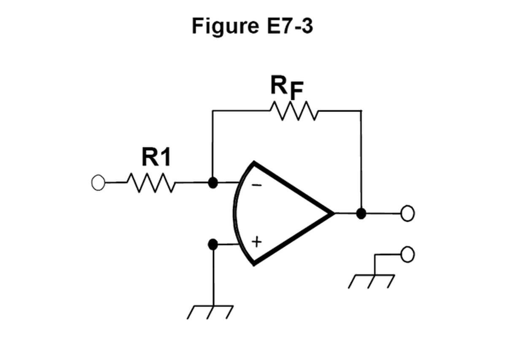

수동R
저항기 Resistor
전류 흐름 억제·제어 (단위: Ω)
FCC 아마추어 무선 시험 문제집(Technician·General·Extra)에 나오는 회로 기호와 회로도를 한곳에 모았습니다. 기초·심화 기호 36종을 먼저 보고, 실제 부품 배선도와 회로도를 나란히 놓고 부품 번호를 하나씩 맞춰 읽습니다.
목차 · 누르면 그 장으로 이동합니다
기초 소자 16종 · FET 구분(E6-1) 6종 · 특수 다이오드·사이리스터(E6-2) 8종 · 논리 게이트(E6-3) 6종
수동 소자·능동 소자·접지·전원·보호·제어·발진
전류 흐름 억제·제어 (단위: Ω)
저항값 연속 변경 (AF·RF 게인)
전기장 에너지 저장, DC 차단 (단위: F)
동조 회로(Tuned circuit)와 튜너 정합
자기장 에너지 저장, RF 초크 (단위: H)
교류 전압·전류와 임피던스 변환
애노드(A)→캐소드(K) 한 방향으로만 통전·정류
전류가 흐르면 빛을 내는 반도체 표시 소자
베이스(B)·컬렉터(C)·이미터(E), 전류 증폭
게이트(G)·드레인(D)·소스(S), 전압 제어
왼쪽: 대지(Earth) / 오른쪽: 금속 섀시(Chassis)
고주파(RF) 에너지를 공간으로 방사·수신
긴 선이 양극(+), 짧고 굵은 선이 음극(−)
과전류가 흐르면 녹아 끊어져 회로를 보호
회로를 열고 닫음 (극 Pole · 투 Throw)
정밀한 기준 주파수 발진 (PLL 기준)
FCC Extra Figure E6-1 · 1~6번 · JFET, 공핍형·증가형 MOSFET, 듀얼게이트 MOSFET

게이트 절연 틈이 없고, 화살표가 바깥쪽(게이트 쪽)을 향함
게이트 절연 틈 + 기판 화살표가 안쪽(채널 쪽) = N채널
게이트 절연 틈 + 기판 화살표가 바깥쪽 = P채널 (2번과 화살표 방향만 다름)
G1·G2 두 게이트 내장 (RF 증폭·AGC·믹서 회로)
G1·G2 두 게이트 + 기판 화살표 바깥쪽(P채널)
게이트 절연 틈이 없고, 화살표가 채널 쪽(안쪽)을 향함
FCC Extra Figure E6-2 · 1~8번 · 바랙터, 제너, 쇼트키, SCR, 트라이액

역방향 전압에 따라 정전용량(C)이 바뀌는 전자 동조 소자
두 다이오드가 가운데 막대를 향해 마주 보는 기호. 1·3~8번과 모양을 구분해 둡니다.
역방향 항복 전압으로 일정한 기준 전압을 유지
교류를 직류로 바꾸는 반파·전파 정류와 검파
순방향 전류가 흐르면 빛을 내는 표시 소자
금속-반도체 접합, 순방향 전압 강하가 낮고 스위칭이 빠름
게이트에 트리거 신호가 들어오면 도통하는 단방향 전력 스위치
교류 양방향 전류를 게이트로 위상 제어하는 3단자 소자
FCC Extra Figure E6-3 · 1~6번 · AND, NAND, OR, NOR, NOT, 증폭·비교기

모든 입력이 HIGH(1)일 때만 출력이 HIGH(1)
모든 입력이 HIGH(1)일 때만 출력이 LOW(0)
입력 중 하나라도 HIGH(1)이면 출력이 HIGH(1)
입력 중 하나라도 HIGH(1)이면 출력이 LOW(0)
입력 논리 상태를 반전 (0 → 1, 1 → 0)
뒷면이 곡선이고 앞이 뾰족한 삼각형. Figure E7-3의 연산 증폭기와 같은 모양으로, 앞이 둥근 OR(3번)과 구분해 둡니다.
실체 부품 배선도와 표준 회로도를 나란히 놓고 번호를 하나씩 맞춰 봅니다
부품 1~5번 · 실체 배선도와 회로도 기호를 1:1로 맞춰 읽기

배터리(4)가 공통 섀시 접지(5)를 기준으로 램프(3)와 컬렉터에 직류 전압을 걸어 둡니다.
왼쪽 입력 단자에 양(+) 제어 전압이 들어오면 저항(1)이 베이스 전류를 알맞게 제한합니다.
트랜지스터(2)의 컬렉터-이미터 사이가 도통되어 전류가 흐르고 램프(3)가 켜집니다.
트랜지스터(2) 베이스로 과도한 전류가 흘러 소자가 손상되는 것을 막는 전류 제한 저항입니다.
작은 베이스 입력 전류로 큰 컬렉터 부하(램프 3) 전류를 켜고 끄는 전자식 스위칭·증폭 소자입니다.
트랜지스터(2)가 도통되면 전류가 흘러 빛을 내는 부하(Load)이자 동작 표시등입니다.
여러 셀(Cell)을 직렬로 묶어 회로에 필요한 직류(DC) 전원을 공급합니다.
입력 신호, 트랜지스터 이미터, 배터리 음극(−)이 함께 연결되는 기준 전위(0 V)입니다.
부품 1~10번 · 교류 입력부터 정전압 출력까지

상용 교류 전원(1)이 퓨즈(2)와 스위치(3)를 거쳐 변압기(4)에서 낮은 교류 전압으로 바뀝니다.
정류 다이오드(5)가 교류를 반파 정류해 맥류로 만들고, 대용량 커패시터(6)가 충·방전하며 평탄한 직류로 다듬습니다.
저항(7)과 LED(8)가 전원 켜짐을 표시하고, 가변 저항(9)과 제너 다이오드(10)가 일정한 전압을 내보냅니다.
상용 교류(AC) 전원을 받는 전원 플러그 단자입니다.
1차 쪽 입력에 과전류가 흐르면 끊어져 전원 장치를 화재와 소손에서 보호합니다.
전원 장치의 1차 쪽 교류 회로를 여닫는 주 전원 스위치입니다.
높은 상용 교류 전압을 전자 회로에 맞는 낮은 교류 전압으로 강압(Step-down)합니다.
교류의 한쪽 반주기만 통과시켜 한 방향으로만 흐르는 맥류(Pulsating DC)로 정류합니다.
정류된 맥류의 전압 굴곡(리플)을 충·방전으로 메워 매끄러운 직류로 만듭니다.
전원 표시용 발광 다이오드(8)에 과전류가 흘러 소손되는 것을 막습니다.
직류 전원이 정상적으로 나오고 있음을 눈으로 알려 주는 반도체 표시등입니다.
제너 다이오드(10)와 출력단으로 흐르는 전류와 전압 강하량을 조절합니다.
출력 단자에 병렬로 연결되어 부하가 변해도 일정한 정전압(Regulated Voltage)을 유지합니다.
부품 1~4번 · C-L-C 구성의 T형 정합망

무전기(송신기)에서 고주파(RF) 전력이 들어오는 안테나 튜너 입력 포트입니다.
입력단에 직렬로 놓여 용량성 리액턴스를 조절해 임피던스를 맞추는 바리콘입니다. 도면 오른쪽 출력단에도 같은 커패시터가 대칭으로 놓여 T형 정합망을 이룹니다.
접지와 병렬로 연결되어 롤러나 탭으로 인덕턴스(L)를 바꾸는 튜너의 핵심 코일입니다.
T형 정합 회로가 송신기 쪽에서 50 Ω 부하로 보이도록 임피던스를 맞춘 뒤, 전달된 RF 전력을 공간으로 방사합니다.
VFO 발진·버퍼 증폭 회로, 부품 1~11번
부품 1~11번 · 현행 FCC General 문제집(2023~2027) 도면
제너 정전압(5) → 바랙터 전자 동조(11, 4) → JFET 하틀리 발진(7, 10, 3, 1) → BJT 버퍼 증폭(2, 9) → 변압기 출력(6)

제너 다이오드(5)와 바이패스 C(8)가 전원 전압 변동을 막아 발진 주파수가 흔들리는 것(Drift)을 줄입니다.
가변 저항(11)으로 직류 역전압을 바꾸면 바랙터 다이오드(4)의 정전용량이 변해 공진 주파수가 이동합니다.
탭 코일(7)의 정귀환 신호가 결합 C(10)와 다이오드(3)를 거쳐 JFET(1)에서 연속 RF 신호로 발진합니다.
버퍼 TR(2)과 이미터 저항(9)이 뒷단 부하 변동으로부터 발진기(1)를 떼어 놓고 신호를 안정적으로 증폭합니다.
출력 변압기(6)가 버퍼단 임피던스를 다음 단에 맞게 바꿔 OUT 단자로 내보냅니다.
표준 기호로는 N채널 JFET(시험 보기에서는 포괄 명칭인 FET)이며, 하틀리 VFO의 핵심 발진 소자입니다.
외부 부하 변화가 발진기(1)의 주파수를 흔들지 않도록 떼어 놓고 증폭하는 완충(Buffer) 증폭기입니다.
JFET(1) 게이트 전압이 양(+)으로 지나치게 올라가는 것을 막고 자동 바이어스를 잡아 줍니다.
걸리는 직류 역전압 크기에 따라 정전용량(C)이 변해 VFO 공진 주파수를 전자식으로 동조합니다.
발진부와 튜닝 회로에 공급되는 직류 전압을 일정하게 유지하는 정전압 소자입니다.
두 권선 사이의 평행선 두 줄이 철심(Solid core)을 뜻합니다. 선이 없으면 공심 코일입니다. 버퍼 증폭기(2)의 신호를 유도 결합해 출력 단자(OUT)로 보냅니다.
중간 탭으로 JFET(1) 소스에 에너지를 되먹임(정귀환)해 하틀리 발진을 일으키는 공진 코일입니다. 인덕터 중간 탭 귀환은 하틀리, 커패시터 분압 귀환은 콜피츠 발진기입니다.
정전압 직류 전원선에 섞인 고주파 잡음을 접지로 우회(Bypass)시켜 전원을 깨끗하게 합니다.
버퍼 트랜지스터(2)의 직류 동작점을 안정시키고 온도 상승에 따른 전류 폭주를 막습니다.
공진 회로의 고주파 교류 신호는 게이트로 보내고, 바랙터 튜닝용 직류 전압은 막습니다.
바랙터 다이오드(4)에 걸리는 직류 튜닝 전압을 연속으로 조절해 VFO 발진 주파수를 바꿉니다.
공통 이미터 증폭기 · 직렬 리니어 정전압 레귤레이터 · 반전 연산 증폭기
입력 결합 → 분압 바이어스 → 공통 이미터 증폭 → 출력 결합
입력 결합(IN, C1) → 전압 분배 바이어스(R1, R2) → 공통 이미터 NPN BJT 증폭 → 자기 바이어스·바이패스(R3, C3) → 출력 결합(C2, OUT)

도면에는 이름이 없는, 컬렉터와 + 사이의 저항입니다. 증폭된 교류 신호 전류를 전압 강하로 바꿔 출력 단자(OUT)로 보냅니다.
전원 전압(+)을 저항비로 나눠 트랜지스터 베이스에 안정된 바이어스 전압을 공급합니다.
직류(DC) 바이어스 전압이 밖으로 새는 것은 막고 교류(AC) 신호만 통과시킵니다.
직류 부귀환으로 온도 변화에 따른 동작점 흔들림(열폭주)을 억제합니다.
교류 신호가 R3를 거치지 않고 곧바로 접지로 빠지게 해 교류 증폭 이득(Gain)이 줄어드는 것을 막습니다.
+25 V 비안정 입력 → +12 V 정전압 출력
비안정 입력(+25 V) → 리플 필터(C1) → 제너 기준 전압(R1, D1, C2) → 직렬 패스 TR(Q1) → RF 바이패스·부하 저항(C3, R2) → 정전압 출력(+12 V)

부하 전류를 직접 통과시키면서 베이스 기준 전압에 맞춰 출력 전압(+12 V)을 일정하게 제어합니다.
트랜지스터 Q1의 베이스에 흔들리지 않는 기준 전압(Reference Voltage)을 줍니다.
C1과 C2(4000)는 4,000 μF 대용량 전해 커패시터로 리플과 제너 잡음을 없애고, C3(0.01 μF)는 출력단 고주파를 우회시킵니다.
R1은 D1과 Q1 베이스에 전류를 공급하고, R2는 무부하일 때 최소 전류를 흘리며 커패시터를 방전시키는 블리더 저항입니다.
Inverting Op-Amp · 이득 = −RF / R1
입력 신호 → 입력 저항(R1) → 반전 입력(−)과 부귀환 저항(RF) · 비반전 입력(+) 접지 → 위상 반전 증폭 출력

개방 루프 이득이 매우 큰 차동 증폭 IC입니다. 비반전 단자(+)를 접지하면 반전 증폭기로 동작하고, 이때 반전 단자(−)는 가상 접지(Virtual Ground, 0 V)가 됩니다.
전압 증폭도 Av = −RF / R1을 정하며, 출력 위상은 입력과 180° 반전됩니다. 가상 접지 때문에 회로의 입력 임피던스는 Zin ≈ R1입니다.